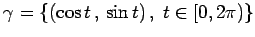
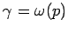
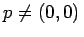
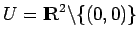
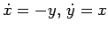
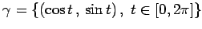

Inhalt Index DeskTop Bronstein

 Dynamische Systeme und Chaos Gewöhnliche Differentialgleichungen und Abbildungen Qualitative Theorie gewöhnlicher Differentialgleichungen Stabilitätstheorie
Dynamische Systeme und Chaos Gewöhnliche Differentialgleichungen und Abbildungen Qualitative Theorie gewöhnlicher Differentialgleichungen Stabilitätstheorie


| Beispiel |
|
Ist z. B. unbeschränkt, dann muß nicht unbedingt zusammenhängend sein (s. Abbildung). |
Für autonome Differentialgleichungen in der Ebene sind also Attraktoren, die komplizierter als eine Ruhelage oder ein periodischer Orbit sind, nicht möglich.
| Beispiel A |
|
Für den Fluß von (17.9a) gilt für den periodischen Orbit  die Eigenschaft  für alle . Also ist  eine Umgebung von |
| Beispiel B |
|
Für die lineare Differentialgleichung  ist dagegen  ein periodischer Orbit, aber kein Grenzzyklus (s. Abbildung). |